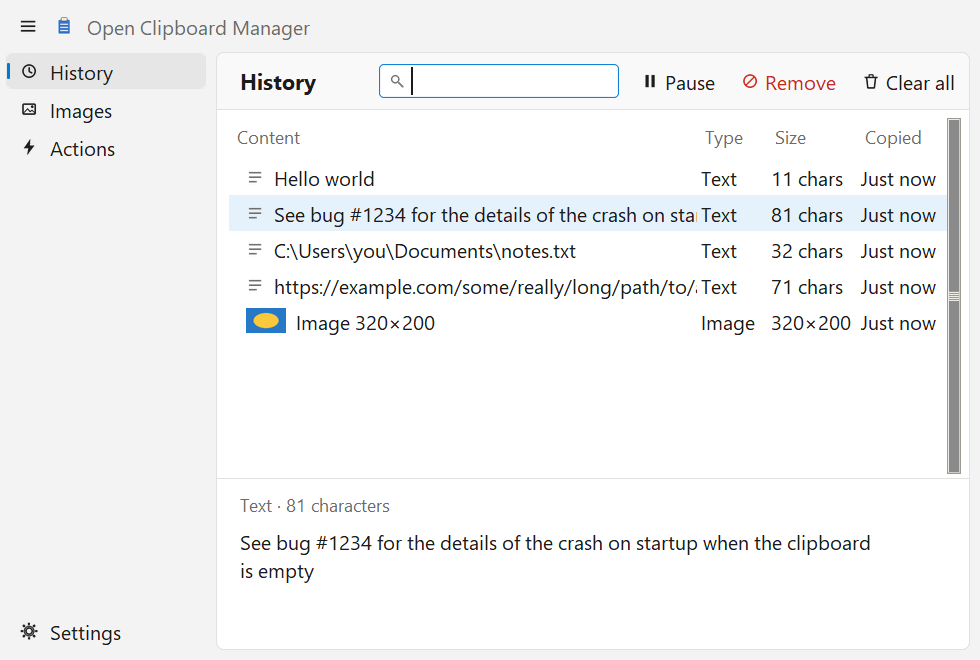
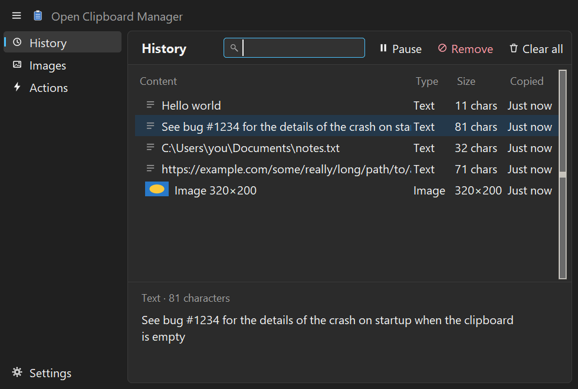
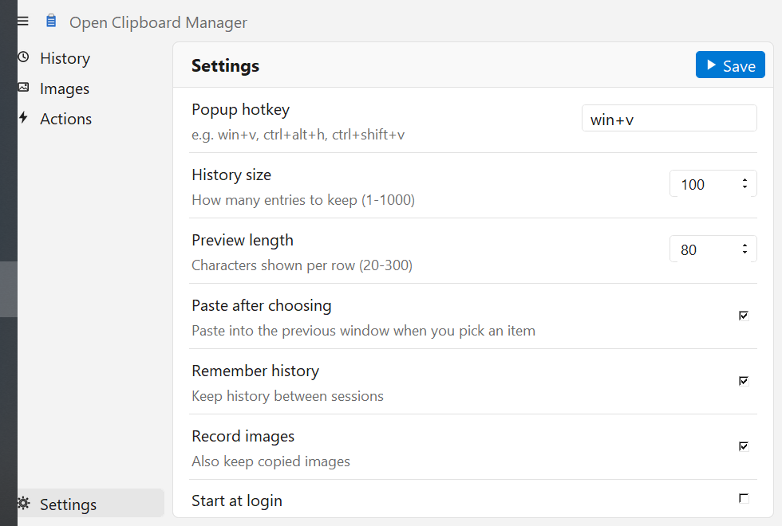

ctrl+c · clipboard history
Press Win + V, pick an earlier entry, and it is pasted into the window you were in. A free, open-source clipboard history for Windows, Linux and macOS, for text and images. Everything stays on your computer: no account, no telemetry, no network access.



features
It follows the look of Open Task Manager: a navigation rail, a card, a flat table and rounded controls.
image to find pictures. There is an Images tab too.actions.json.install
Single-file downloads for each system. They are not code-signed yet, so your OS may warn you the first time.
Download Open-Clipboard-Manager-x64.exe and run it. It is one portable file; the first launch takes a few seconds while it unpacks. If SmartScreen warns you, choose More info → Run anyway. A SHA256SUMS.txt is attached to every release.
The app lives in the system tray. Turn on Settings → Start at login to launch it with Windows.
Download the binary, make it executable and run it:
chmod +x Open-Clipboard-Manager-x86_64 ./Open-Clipboard-Manager-x86_64
It needs helper programs from your package manager: xclip (X11) or wl-clipboard (Wayland) for the clipboard, and xdotool or wtype to paste. The Super+V hotkey works on X11 only. On Wayland no app can grab a global key, so bind a desktop shortcut to Open-Clipboard-Manager-x86_64 --show. On GNOME the tray icon needs the AppIndicator extension.
Download Open-Clipboard-Manager-macos-arm64.zip, unzip it and drag the app to Applications. It is not signed or notarized, so the first time, right-click the app and choose Open. Auto-paste needs the Accessibility permission under System Settings → Privacy & Security. The hotkey is Ctrl+Cmd+V.
The macOS build is started and tested by CI on a real Mac, but nobody has used the clipboard, hotkey and paste on one yet. Expect rough edges and please report them.
Needs Python 3 with Tk (the python.org installers include it).
git clone https://github.com/sabaoongfx/open-clipboard-manager cd open-clipboard-manager pip install -r requirements.txt python winclipman.py
Running the app again, or python winclipman.py --show, opens the window of the copy that is already running.
download
Direct links to the latest release, free and open source.
specs
roadmap